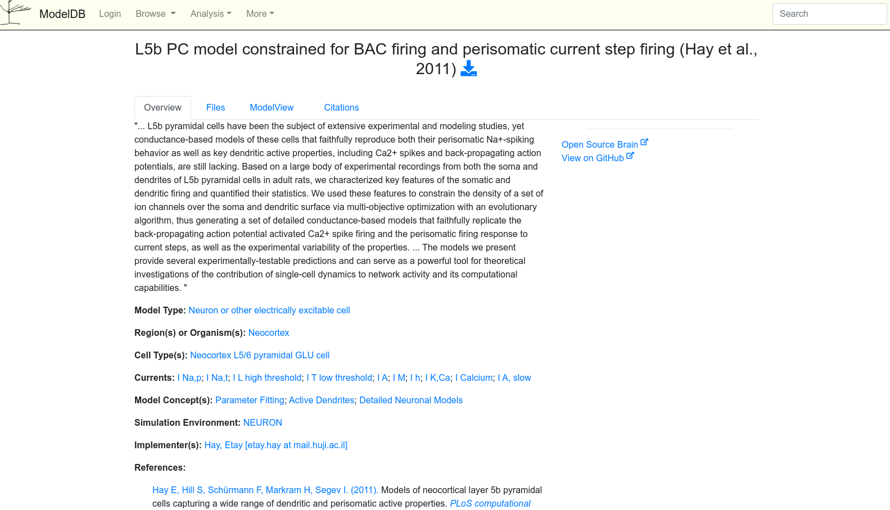

Using Customized and External Cell and Channel Models in BioNet#
Through the main tutorials, we’ve been using networks built off cell models downloaded from the Allen Cell-Types Database. While the Allen Cell-Types Databases has a comprehensive and continuingly growing selection of optimized cell-type models to download and use, for many scientists, it may not meet their needs. BMTK supports incorporating many cell types and synaptic models into their simulations, including pre-built models from non-Allen Institute organizations. It also allows users multiple ways to create their customized models.
This section will focus on single-cell spiking models, including conductance-based models with multiple channels and/or compartments per model. We do not recommend using Rates-based models with BioNet, and they will likely not work.
The following section will show users multiple ways to import or create their own networks and simulations. Many of the multi-compartment biophysically detailed models developed for the NEURON simulator are written in .hoc format. Another popular format is NeuroML v2. In other cases, models may be written in Python. BioNet supports these options and allows users to readily implement other options, too.
If you are unfamiliar with how and where to find cell and channel models that have been created by other scientists, two good options to start looking at are:
Note - scripts and files for running this tutorial can be found in the directory 01_opt_external_models/
1. Cell Models#
1.1. Example: Loading in a Simple Hoc Model#
Step 1:#
Note: This step has already been done in the current notebook and does not need to be repeated, but may be useful when initializing other examples
The first thing we’ll do is to download and unpack the model files from ModelDB, which for the Hay L5PC models can be found at https://modeldb.science/139653. At the site, you can use the download button to download a zip file with the appropriate .hoc (cell model), .mod (ion channels), and .asc (morphologies) files.

To run properly, we will need to move the following files from the download zip file into our components/ folder so BMTK will be able to find them during the simulation:
Move mod/ folder => componets/mechanisms/mod/.
Move morphologies/*.asc files => components/morphologies/ folder.
Move models/L5PCtemplate.hoc and models/L5PCbiophys4.hoc => componets/templates/ folder (note: The zip file contains four different version of L5PCbiophys model stored in different hoc files. However, only one can be loaded into NEURON at a time, hence we are only moving one of the files and not all of them).
The model contains customized ion channels in the components/mechanisms/mod/ folder that require compiling using the nrnivmod command. In a shell or using jupyter notebook you’ll need to run the following:
[1]:
! cd components/mechanisms && nrnivmodl modfiles
/home/shared/workspace/docs/tutorial/01_opt_external_models/components/mechanisms
Mod files: "modfiles/CaDynamics.mod" "modfiles/CaDynamics_E2.mod" "modfiles/Ca_HVA.mod" "modfiles/Ca_LVA.mod" "modfiles/Ca_LVAst.mod" "modfiles/Cav2_1.mod" "modfiles/Cav3_1.mod" "modfiles/Cav3_2.mod" "modfiles/Cav3_3.mod" "modfiles/Gfluct.mod" "modfiles/HCN1_Angeloetal2007.mod" "modfiles/Ih.mod" "modfiles/Im.mod" "modfiles/Im_v2.mod" "modfiles/K_P.mod" "modfiles/K_Pst.mod" "modfiles/K_T.mod" "modfiles/K_Tst.mod" "modfiles/Kca11.mod" "modfiles/Kca22.mod" "modfiles/Kca31.mod" "modfiles/Kd.mod" "modfiles/Kir23.mod" "modfiles/Kv11.mod" "modfiles/Kv15.mod" "modfiles/Kv2like.mod" "modfiles/Kv33.mod" "modfiles/Kv34.mod" "modfiles/Kv3_1.mod" "modfiles/Kv43.mod" "modfiles/Leak.mod" "modfiles/NaTa.mod" "modfiles/NaTa_t.mod" "modfiles/NaTg.mod" "modfiles/NaTs.mod" "modfiles/NaTs2_t.mod" "modfiles/NaV.mod" "modfiles/Nap.mod" "modfiles/Nap_Et2.mod" "modfiles/Nav16.mod" "modfiles/PC_Gaba_det_vi_alfa1.mod" "modfiles/PURKINJE_Ampa_det_vi.mod" "modfiles/ProbAMPANMDA2.mod" "modfiles/ProbUDFsyn2.mod" "modfiles/SK.mod" "modfiles/SK_E2.mod" "modfiles/SKv3_1.mod" "modfiles/cdp5_CAM.mod" "modfiles/epsp.mod" "modfiles/exp1isyn.mod" "modfiles/exp1syn.mod" "modfiles/stp1syn.mod" "modfiles/stp2syn.mod" "modfiles/stp3syn.mod" "modfiles/stp4syn.mod" "modfiles/stp5isyn.mod" "modfiles/stp5syn.mod" "modfiles/vecevent.mod"
COBJS=''
-> Compiling mod_func.c
gcc -O2 -I. -I/opt/conda/envs/bmtk/lib/python3.9/site-packages/neuron/.data/include -I/nrnwheel/openmpi/include -fPIC -c mod_func.c -o mod_func.o
=> LINKING shared library ./libnrnmech.so
g++ -O2 -DVERSION_INFO='8.0.0' -std=c++11 -shared -fPIC -I /opt/conda/envs/bmtk/lib/python3.9/site-packages/neuron/.data/include -o ./libnrnmech.so -Wl,-soname,libnrnmech.so \
./mod_func.o ./CaDynamics.o ./CaDynamics_E2.o ./Ca_HVA.o ./Ca_LVA.o ./Ca_LVAst.o ./Cav2_1.o ./Cav3_1.o ./Cav3_2.o ./Cav3_3.o ./Gfluct.o ./HCN1_Angeloetal2007.o ./Ih.o ./Im.o ./Im_v2.o ./K_P.o ./K_Pst.o ./K_T.o ./K_Tst.o ./Kca11.o ./Kca22.o ./Kca31.o ./Kd.o ./Kir23.o ./Kv11.o ./Kv15.o ./Kv2like.o ./Kv33.o ./Kv34.o ./Kv3_1.o ./Kv43.o ./Leak.o ./NaTa.o ./NaTa_t.o ./NaTg.o ./NaTs.o ./NaTs2_t.o ./NaV.o ./Nap.o ./Nap_Et2.o ./Nav16.o ./PC_Gaba_det_vi_alfa1.o ./PURKINJE_Ampa_det_vi.o ./ProbAMPANMDA2.o ./ProbUDFsyn2.o ./SK.o ./SK_E2.o ./SKv3_1.o ./cdp5_CAM.o ./epsp.o ./exp1isyn.o ./exp1syn.o ./stp1syn.o ./stp2syn.o ./stp3syn.o ./stp4syn.o ./stp5isyn.o ./stp5syn.o ./vecevent.o -L/opt/conda/envs/bmtk/lib/python3.9/site-packages/neuron/.data/lib -lnrniv -Wl,-rpath,/opt/conda/envs/bmtk/lib/python3.9/site-packages/neuron/.data/lib
rm -f ./.libs/libnrnmech.so ; mkdir -p ./.libs ; cp ./libnrnmech.so ./.libs/libnrnmech.so
Successfully created x86_64/special
Step 2: Building the Network#
Building a network using the downloaded L5PC Hay model is very similar to how we built biophysically detailed network models in previous tutorials. We use the add_nodes() method to add a population of 1 or more L5PC biophysical cells and the add_edges() to connect them up with other cells. However, due to the model type and parameters, we will need to make some changes compared
to how we utilize Allen-Cell Types Database models.
We set model_template=
hoc:L5PCtemplateinstead of the Allenctdb:Biophys1value. The name of the Hoc Template for loading this particular model comes from the components/templates/L5PCtemplate.hoc fileIn our Allen Cell-Types models, we had set the value model_processing to ‘aibs_perisomatic’, which told bmtk to call the special post-intialization directive
aibs_perisomatic, which would modify each cell object in a specific manner. Although it is possible to create custom directives to update and modify each cell after the template has been loaded (see below), we don’t want to do so. Instead, we leave the model_processing attribute blank.In our Allen Cell-Types models, we also had a dynamics_params option that would update and add cell parameters after the cell had been initialized. However, for our L5PC Hay model, we have no current need to update the parameters (we’ll instead use the parameter values stored in the .hoc files), so we will not have any dynamics_params attributes.
[2]:
from bmtk.builder.networks import NetworkBuilder
net = NetworkBuilder('L5')
net.add_nodes(
N=10,
model_type='biophysical',
model_template='hoc:L5PCtemplate',
morphology='cell3.asc'
)
net.build()
net.save(output_dir='network_L5')
WARNING:root:No edges have been made for this network, skipping saving of edges file.
[3]:
virt_exc = NetworkBuilder('virt_exc')
virt_exc.add_nodes(
N=20,
model_type='virtual',
ei_type='exc'
)
conns = virt_exc.add_edges(
source=virt_exc.nodes(),
target=net.nodes(),
connection_rule=12,
model_template='Exp2Syn',
dynamics_params='AMPA_ExcToExc.json',
distance_range=[0.0, 1.0e20],
target_sections=['soma', 'basal', 'apical'],
delay=2.0,
syn_weight=0.01
)
virt_exc.build()
virt_exc.save(output_dir='network_L5')
Step 3: Running the simulation#
Running the simulation with the downloaded L5PC models is no different than running the simulations with the Allen Cell-Types Database cell models. BMTK will be able to use the configuration components sections along with the model_template and morphology values to automatically load in our 10 L5PC cells. The results for these cells, including spikes, Vm traces, etc., will be saved in the same format and paths as our other examples.
[4]:
from bmtk.simulator import bionet
bionet.reset()
conf = bionet.Config.from_json('config.L5.json')
conf.build_env()
net = bionet.BioNetwork.from_config(conf)
sim = bionet.BioSimulator.from_config(conf, network=net)
sim.run()
2024-10-21 18:38:09,287 [INFO] Created log file
INFO:NEURONIOUtils:Created log file
numprocs=1
2024-10-21 18:38:09,412 [INFO] Building cells.
INFO:NEURONIOUtils:Building cells.
2024-10-21 18:38:16,890 [INFO] Building recurrent connections
INFO:NEURONIOUtils:Building recurrent connections
2024-10-21 18:38:16,902 [INFO] Building virtual cell stimulations for virt_exc_spikes
INFO:NEURONIOUtils:Building virtual cell stimulations for virt_exc_spikes
2024-10-21 18:38:16,982 [INFO] Running simulation for 2000.000 ms with the time step 0.100 ms
INFO:NEURONIOUtils:Running simulation for 2000.000 ms with the time step 0.100 ms
2024-10-21 18:38:16,984 [INFO] Starting timestep: 0 at t_sim: 0.000 ms
INFO:NEURONIOUtils:Starting timestep: 0 at t_sim: 0.000 ms
2024-10-21 18:38:16,986 [INFO] Block save every 5000 steps
INFO:NEURONIOUtils:Block save every 5000 steps
2024-10-21 18:38:30,278 [INFO] step:5000 t_sim:500.00 ms
INFO:NEURONIOUtils: step:5000 t_sim:500.00 ms
2024-10-21 18:38:43,513 [INFO] step:10000 t_sim:1000.00 ms
INFO:NEURONIOUtils: step:10000 t_sim:1000.00 ms
2024-10-21 18:38:56,897 [INFO] step:15000 t_sim:1500.00 ms
INFO:NEURONIOUtils: step:15000 t_sim:1500.00 ms
2024-10-21 18:39:10,212 [INFO] step:20000 t_sim:2000.00 ms
INFO:NEURONIOUtils: step:20000 t_sim:2000.00 ms
2024-10-21 18:39:10,249 [INFO] Simulation completed in 53.27 seconds
INFO:NEURONIOUtils:Simulation completed in 53.27 seconds
1.2. Example: Modifying Model Initialization#
If we search Open Source Brain, we can see other more recent versions of L5 Pyramidal Cell models based on the original L5PC Hay model. Suppose we wanted to incorporate these newer models alongside the original L5 PC network created above. We would need to do the following:
Download the files
Move the morphology, mode, and model template files to their appropriate location
Since these files also include new .mod files, we would have to recompile them:
$ cd components/mechanisms && nrnivmodl modfiles
The newer models have a different morphology file (Hl5PN1.swc) and HOC Template name (HNTemplate). So in order to add these new cells to the old one we can add the following call in our build script (build_network.L5_updated.py):
net.add_nodes(
N=5,
model_type='biophysical',
model_template='hoc:HNTemplate',
morphology='HL5PN1.swc'
)
Note: We’ll also modify the script to write the network to a different directory
We could try to run the L5_updated model like before, but it would throw an error
⚠️ NEURON: init not enough arguments
The Reason: We are not calling the HNTemplate correctly.
If we look through the code and the documentation, we can see that, to instantiate an HNTemplate cell model instance, we must pass two parameters: The morphology file and the cell-type (one of a preset number of string values that will determine how specific properties are set within the model). In this case, the call would look like:
h.HNTemplate(morphology_file_path, "HL5PN1")
The built-in BMTK function that tries to load hoc files, loadHOC, does not know how to load this specific template. And even if it did, you may run into other models that require different, unseen ways of initialization.
While it is possible to overwrite the loadHOC function, it is not ideal. To avoid breaking existing models, we would need to have multiple cases based on each possible template.
Solution
Instead of using one function to load in every template, we can create our own custom function to load the HNTemplate. To achieve this, BMTK uses a special python decorator to assign to function users have written (in either the notebook or run_bionet.py script). Below, we show an example of how to do this using a custom function we’ll call loadHNTemplate():
[5]:
from neuron import h
from bmtk.simulator.bionet import cell_model
from bmtk.simulator.bionet.io_tools import io
@cell_model(directive='hoc:HNTemplate', model_type='biophysical')
def loadHNTemplate(cell, template_name, dynamics_params):
io.log_info(f'Calling loadHNTemplate() for cell {cell["node_id"]}, template {template_name}')
hobj = h.HNTemplate(cell['morphology'], "HL5PN1")
return hobj
The
@cell_modelis a decorator we put at the front of our function. Usingdirective=hoc:Templateandmodel_type=biophysicalparameters indicates to BMTK that whenever a cell model needs to be built for a biophysical, HNTemplate hoc template, it will use this function.Our function requires three parameters;
The
cellparameter contains attributes of each individual cell and can be used to extract properties like the morphology file, the node-id, coordinates, etc.The
template_nameis, in this case, just the string value “HNTemplate”The
dynamics_paramsis a dictionary from the dynamics_params json or hdf5. In this network, we never set the dynamics_params attributes, so the value will be None.
We need to return either a hoc-object or some other Python class built using the NEURON API.
For a sanity check, we also included a log statement. We should only see this message for the 5 newer HNTemplate models, not for the other original “L5PCTemplate” cells.
During simulation, this function will be called for every cell with matching “template_name” and “model_type”.
[6]:
bionet.reset()
conf = bionet.Config.from_json('config.L5_updated.json')
conf.build_env()
net = bionet.BioNetwork.from_config(conf)
sim = bionet.BioSimulator.from_config(conf, network=net)
sim.run()
2024-10-21 18:39:10,266 [INFO] Created log file
INFO:NEURONIOUtils:Created log file
Mechanisms already loaded from path: ./components/mechanisms. Aborting.
2024-10-21 18:39:10,335 [INFO] Building cells.
INFO:NEURONIOUtils:Building cells.
2024-10-21 18:39:14,153 [INFO] Calling loadHNTemplate() for cell 5, template HNTemplate
INFO:NEURONIOUtils:Calling loadHNTemplate() for cell 5, template HNTemplate
2024-10-21 18:39:14,377 [INFO] Calling loadHNTemplate() for cell 6, template HNTemplate
INFO:NEURONIOUtils:Calling loadHNTemplate() for cell 6, template HNTemplate
2024-10-21 18:39:14,596 [INFO] Calling loadHNTemplate() for cell 7, template HNTemplate
INFO:NEURONIOUtils:Calling loadHNTemplate() for cell 7, template HNTemplate
2024-10-21 18:39:14,813 [INFO] Calling loadHNTemplate() for cell 8, template HNTemplate
INFO:NEURONIOUtils:Calling loadHNTemplate() for cell 8, template HNTemplate
2024-10-21 18:39:15,043 [INFO] Calling loadHNTemplate() for cell 9, template HNTemplate
INFO:NEURONIOUtils:Calling loadHNTemplate() for cell 9, template HNTemplate
2024-10-21 18:39:15,258 [INFO] Building recurrent connections
INFO:NEURONIOUtils:Building recurrent connections
2024-10-21 18:39:15,282 [INFO] Building virtual cell stimulations for virt_exc_spikes
INFO:NEURONIOUtils:Building virtual cell stimulations for virt_exc_spikes
2024-10-21 18:39:15,346 [INFO] Running simulation for 2000.000 ms with the time step 0.100 ms
INFO:NEURONIOUtils:Running simulation for 2000.000 ms with the time step 0.100 ms
2024-10-21 18:39:15,347 [INFO] Starting timestep: 0 at t_sim: 0.000 ms
INFO:NEURONIOUtils:Starting timestep: 0 at t_sim: 0.000 ms
2024-10-21 18:39:15,348 [INFO] Block save every 5000 steps
INFO:NEURONIOUtils:Block save every 5000 steps
2024-10-21 18:39:35,798 [INFO] step:5000 t_sim:500.00 ms
INFO:NEURONIOUtils: step:5000 t_sim:500.00 ms
2024-10-21 18:39:56,404 [INFO] step:10000 t_sim:1000.00 ms
INFO:NEURONIOUtils: step:10000 t_sim:1000.00 ms
2024-10-21 18:40:17,730 [INFO] step:15000 t_sim:1500.00 ms
INFO:NEURONIOUtils: step:15000 t_sim:1500.00 ms
2024-10-21 18:40:38,490 [INFO] step:20000 t_sim:2000.00 ms
INFO:NEURONIOUtils: step:20000 t_sim:2000.00 ms
2024-10-21 18:40:38,524 [INFO] Simulation completed in 83.18 seconds
INFO:NEURONIOUtils:Simulation completed in 83.18 seconds
1.3. Example: Loading a python-based neuronal model into your simulation#
Often, rather than being written in old .hoc format, scientists may instead release their models written in Python. For example, in this mouse Purkinje cell model, the model is itself saved in the Purkinje_morph_1.Purkinje_Morph_1 Python class. In nearly the same manner as we did with the .hoc files above, we can import these Python-based single-cell models into our network to use with BMTK.
As before, we must download the necessary files, but in this case, the *.py files, including the file containing the cell-model class/template, should be in the same directory as our run_bionet.py script so that we may import it. Also, the Python script expects the .asc morphology file to be hard-coded in the path ./morphology/soma_10c.asc, so we’ll put it there instead of the normal components directory (unless you want to edit the file).
When we build our population of Purkinje cells, the “model_template” will have schema value python and a value that is just the name of the resources, e.g., the python class Purkinje_morph_1.
net.add_nodes(
pop_name='Scnn1a',
model_type='biophysical',
model_template='python:Purkinje_morph_1',
spines_on=0
)
So that BMTK can load the template, we will once again register a special function using the cell_model decorator. The class can be built with or without dendritic spines, which we are required to pass in. The __init__ method of Purkinje_Morpho_1 will build the model for each given cell, which we will pass back to BTMK.
Also, for good measure, we added some optional logging.
[7]:
from bmtk.simulator import bionet
from bmtk.simulator.bionet.io_tools import io
from Purkinje_morpho_1 import Purkinje_Morpho_1
@bionet.cell_model(directive='python:Purkinje_morph_1', model_type='biophysical')
def loadPurkinjeModel(cell, template_name, dynamics_params):
io.log_info(f'Loading cell {cell.node_id}, template {template_name}, with spines_on={cell["spines_on"]}')
cell = Purkinje_Morpho_1(cell['spines_on'])
return cell
[8]:
bionet.reset()
conf = bionet.Config.from_json('config.purkinje.json')
conf.build_env()
net = bionet.BioNetwork.from_config(conf)
sim = bionet.BioSimulator.from_config(conf, network=net)
sim.run()
2024-10-21 18:40:38,556 [INFO] Created log file
INFO:NEURONIOUtils:Created log file
Mechanisms already loaded from path: ./components/mechanisms. Aborting.
2024-10-21 18:40:38,613 [INFO] Building cells.
INFO:NEURONIOUtils:Building cells.
2024-10-21 18:40:38,614 [INFO] Loading cell 0, tempalate Purkinje_morph_1, with spines_on=0
INFO:NEURONIOUtils:Loading cell 0, tempalate Purkinje_morph_1, with spines_on=0
3856 lines read
indiv number 138
2024-10-21 18:40:38,784 [INFO] Loading cell 1, tempalate Purkinje_morph_1, with spines_on=1
INFO:NEURONIOUtils:Loading cell 1, tempalate Purkinje_morph_1, with spines_on=1
3856 lines read
indiv number 138
spine active!!
dend_total_len 7680
list_dend_complete 7680
somma_location_spines 7680
spines_placed 0
spines_placed 500
spines_placed 1000
spines_placed 1500
spines_placed 2000
spines_placed 2500
spines_placed 3000
spines_placed 3500
spines_placed 4000
spines_placed 4500
spines_placed 5000
spines_placed 5500
spines_placed 6000
spines_placed 6500
spines_placed 7000
spines_placed 7500
spines_syn: spine_head_0
spines_syn: spine_head_5000
spine_head_aa between 0 - 0.3 -> 0
spine_head_aa_SC between 0.3 - 0.75 -> 1494
spine_head_pf_SC between 0.75 - 1.5 -> 6184
!!!!!!!!!!!!!!! spine_total 7678 !!!!!!!!!!!!!!!
2024-10-21 18:40:39,509 [INFO] Building recurrent connections
INFO:NEURONIOUtils:Building recurrent connections
2024-10-21 18:40:39,574 [INFO] Building virtual cell stimulations for virt_spikes
INFO:NEURONIOUtils:Building virtual cell stimulations for virt_spikes
2024-10-21 18:40:39,590 [INFO] Running simulation for 1000.000 ms with the time step 0.100 ms
INFO:NEURONIOUtils:Running simulation for 1000.000 ms with the time step 0.100 ms
2024-10-21 18:40:39,591 [INFO] Starting timestep: 0 at t_sim: 0.000 ms
INFO:NEURONIOUtils:Starting timestep: 0 at t_sim: 0.000 ms
2024-10-21 18:40:39,592 [INFO] Block save every 5000 steps
INFO:NEURONIOUtils:Block save every 5000 steps
2024-10-21 18:43:40,420 [INFO] step:5000 t_sim:500.00 ms
INFO:NEURONIOUtils: step:5000 t_sim:500.00 ms
2024-10-21 18:46:33,760 [INFO] step:10000 t_sim:1000.00 ms
INFO:NEURONIOUtils: step:10000 t_sim:1000.00 ms
2024-10-21 18:46:33,787 [INFO] Simulation completed in 5.0 minutes, 54.2 seconds
INFO:NEURONIOUtils:Simulation completed in 5.0 minutes, 54.2 seconds
1.4. Example: Building your own python-based cell models#
Another option is to build a cell instance yourself using the NEURON Python API. As with above, you just need to change the model_template parameter for the given cell(s) you want to build from scratch and create your own @cell_model function that will be called prior to the simulation to generate individual NEURON cell instances for appropriate node in the network. The code can be put inside your run_bionet.py script or imported from another file in the same directory.
The following example is a simple model taken from the NEURON ball-and-stick tutorial (See build_network.ball_and_stick.py file check how the network was created).
[9]:
from bmtk.simulator import bionet
from bmtk.simulator.bionet.io_tools import io
from neuron import h
class BallAndStick:
def __init__(self, cell):
self._gid = cell['node_id']
self._setup_morphology(cell)
self._setup_biophysics(cell)
def _setup_morphology(self, cell):
self.soma = h.Section(name='soma', cell=self)
self.dend = h.Section(name='dend', cell=self)
self.all = [self.soma, self.dend]
self.dend.connect(self.soma)
self.soma.L = self.soma.diam = 12.6157
self.dend.L = 200
self.dend.diam = 1
def _setup_biophysics(self, cell):
for sec in self.all:
sec.Ra = 100 # Axial resistance in Ohm * cm
sec.cm = 1 # Membrane capacitance in micro Farads / cm^2
self.soma.insert('hh')
for seg in self.soma:
seg.hh.gnabar = cell['gnabar'] # Sodium conductance in S/cm2
seg.hh.gkbar = cell['gkbar'] # Potassium conductance in S/cm2
seg.hh.gl = cell['gl'] # Leak conductance in S/cm2
seg.hh.el = cell['el'] # Reversal potential in mV
# Insert passive current in the dendrite # <-- NEW
self.dend.insert('pas') # <-- NEW
for seg in self.dend: # <-- NEW
seg.pas.g = cell['g_pas'] # Passive conductance in S/cm2 # <-- NEW
seg.pas.e = cell['e_pas'] # Leak reversal potential mV # <-- NEW
def __repr__(self):
return 'BallAndStick[{}]'.format(self._gid)
@bionet.cell_model(directive='python:loadBAS', model_type='biophysical')
def loadPurkinjeModel(cell, template_name, dynamics_params):
bas_cell = BallAndStick(cell)
io.log_info(f'Adding {bas_cell} to network')
return bas_cell
[10]:
bionet.reset()
conf = bionet.Config.from_json('config.ball_and_stick.json')
conf.build_env()
net = bionet.BioNetwork.from_config(conf)
sim = bionet.BioSimulator.from_config(conf, network=net)
sim.run()
2024-10-21 18:46:33,816 [INFO] Created log file
INFO:NEURONIOUtils:Created log file
Mechanisms already loaded from path: ./components/mechanisms. Aborting.
2024-10-21 18:46:33,859 [INFO] Building cells.
NEURON: Biophys : a template cannot be redefined
in Biophys.hoc near line 1
begintemplate Biophys
^
xopen("Biophys.hoc")
execute1("{xopen("Bi...")
load_file("Biophys.hoc")
NEURON: L5PCbiophys : a template cannot be redefined
in L5PCbiophys4.hoc near line 10
begintemplate L5PCbiophys
^
xopen("L5PCbiophy...")
execute1("{xopen("L5...")
load_file("L5PCbiophy...")
NEURON: L5PCtemplate : a template cannot be redefined
in L5PCtemplate.hoc near line 8
begintemplate L5PCtemplate
^
xopen("L5PCtempla...")
execute1("{xopen("L5...")
load_file("L5PCtempla...")
NEURON: HNTemplate : a template cannot be redefined
in HNTemplate.hoc near line 1
begintemplate HNTemplate
^
xopen("HNTemplate.hoc")
execute1("{xopen("HN...")
load_file("HNTemplate.hoc")
INFO:NEURONIOUtils:Building cells.
2024-10-21 18:46:33,862 [INFO] Adding BallAndStick[0] to network
INFO:NEURONIOUtils:Adding BallAndStick[0] to network
2024-10-21 18:46:33,864 [INFO] Adding BallAndStick[1] to network
INFO:NEURONIOUtils:Adding BallAndStick[1] to network
2024-10-21 18:46:33,866 [INFO] Adding BallAndStick[2] to network
INFO:NEURONIOUtils:Adding BallAndStick[2] to network
2024-10-21 18:46:33,868 [INFO] Adding BallAndStick[3] to network
INFO:NEURONIOUtils:Adding BallAndStick[3] to network
2024-10-21 18:46:33,870 [INFO] Adding BallAndStick[4] to network
INFO:NEURONIOUtils:Adding BallAndStick[4] to network
2024-10-21 18:46:33,872 [INFO] Building recurrent connections
INFO:NEURONIOUtils:Building recurrent connections
2024-10-21 18:46:33,935 [INFO] Building virtual cell stimulations for virt_exc_spikes
INFO:NEURONIOUtils:Building virtual cell stimulations for virt_exc_spikes
2024-10-21 18:46:33,974 [INFO] Running simulation for 2000.000 ms with the time step 0.100 ms
INFO:NEURONIOUtils:Running simulation for 2000.000 ms with the time step 0.100 ms
2024-10-21 18:46:33,975 [INFO] Starting timestep: 0 at t_sim: 0.000 ms
INFO:NEURONIOUtils:Starting timestep: 0 at t_sim: 0.000 ms
2024-10-21 18:46:33,976 [INFO] Block save every 5000 steps
INFO:NEURONIOUtils:Block save every 5000 steps
2024-10-21 18:49:33,651 [INFO] step:5000 t_sim:500.00 ms
INFO:NEURONIOUtils: step:5000 t_sim:500.00 ms
2024-10-21 18:52:27,649 [INFO] step:10000 t_sim:1000.00 ms
INFO:NEURONIOUtils: step:10000 t_sim:1000.00 ms
2024-10-21 18:55:22,206 [INFO] step:15000 t_sim:1500.00 ms
INFO:NEURONIOUtils: step:15000 t_sim:1500.00 ms
2024-10-21 18:58:17,138 [INFO] step:20000 t_sim:2000.00 ms
INFO:NEURONIOUtils: step:20000 t_sim:2000.00 ms
2024-10-21 18:58:17,161 [INFO] Simulation completed in 11.0 minutes, 43.19 seconds
INFO:NEURONIOUtils:Simulation completed in 11.0 minutes, 43.19 seconds
For more information on how to build cells from scratch using NEURON see the official documentation.
2. Modifying an existing cell model#
Very often, modelers may want to use an already existing cell model but make some minor changes of their own. For example, you may want to download a prebuilt channel mechanic (in the form of a .mod or .hoc file) to insert into a subset of an already existing network. You may want to edit the cell morphologies to add or remove sections of the neuron. You may want to adjust the channel densities based on the location of the section.
One option to achieve this is to take an existing Hoc, Python, NeuroML, etc., cell model template and manually edit the file! This is NOT a good option for multiple reasons; your changes may lead to unintended side-effects - especially if you’re not familiar with the language or how it was created. On top of that, having to rebuild the network and have multiple versions of a Hoc/Python template can be tedious if you are trying to test and debug your changes on the fly.
Solution
SONATA and BMTK provide support for making changes to an already instantiated cell model using the model_processing attribute. When an attribute is defined for a subpopulation of cells, it defines a directive and/or function to call on said cell immediately after it has been initialized.
In BMTK, implementing your own custom function for “model_processing” is done in the same manner as with cell-loading. You can use the @model_processing decorator to a function that is inside or called in your run_bionet.py script.
from bmtk.simulator.bionent import model_processing
@model_processing
def process_my_cell(hoc_obj, cell, dynamics_params):
updated_hoc_obj = # ... modify hoc object based on parameters stored in cell and/or dynamics params.
return updated_hoc_obj
Then, when building the cells (or by editing either the nodes.h5 or node_types.csv file), you can add a reference to the process_my_cell function.
net.add_nodes(
model_type='biophysical',
model_template='hoc:Biophys1',
model_processing='process_my_cell`,
...
)
BMTK will also allow you to call multiple *model_process` functions in sequence by separating the calls by a comma:
net.add_nodes(
model_type='biophysical',
model_template='hoc:Biophys1',
model_processing='process_cell_1,process_cell_2`,
...
)
2.1. Example: Adding customized mechanisms into an existing cell model#
Besides cell models, repositories like ModelDB and Open Source Brain also contain a wide array of membrane density mechanisms (e.g., currents, and channels) that we may want to add to our own existing cell models. In NEURON, these are typically written as .mod files in the NMODL language and require pre-compilation using the nrnivmodl command.
In this example, we will try downloading arbitrary sodium channel models and show how we can dynamically insert them into our L5 cells using the @model_processing directive.
Step 1: Downloading and compiling mechanisms#
First, we will find mechanisms models (e.g., .mod) files to use in our models. Here we randomly choose sodium channels from ModelDB. Click on the download button to download the files.
We would then need to move the downloaded .mod files into the components/mechansism/modfiles and rerun the command cd components/mechanisms && nrnivmodl. However, to make things more logical, BMTK allows us to have multiple mechanisms directories, so if it turns in the end, we don’t want to use the new mechanisms, they will be easier to delete. Instead, we will put the .mod files into components/dLGN_mechanisms/modfiles, and run nrnivmodl from the new directory. Then, to make sure
BMTK knows where to find the new mechanisms, we need to update the components section of the SONATA config:
"components": {
"templates_dir": "$COMPONENTS_DIR/templates",
"mechanisms_dir": [
"$COMPONENTS_DIR/mechanisms",
"$COMPONENTS_DIR/dLGN_mechanisms"
]
// ...
}
Step 2: Setting directive for a population of neurons#
We need to make minor updates to our build network so that every subset of cells that will have these new mechanisms added will have model_processing attribute pointing to our customized post-initialization function.
net.add_nodes(
N=1,
model_type='biophysical',
model_template='hoc:L5PCtemplate',
morphology='cell3.asc',
model_processing='add_channels'
)
Or if you don’t want to rebuild the entire network, you can also just add a model_processing to the node_types.csv.
Step 3: Add model_processing function and run#
Now, we can add our customized add_channels function, which will be called for each applicable cell right before the simulation. Like with the @cell_model directive, the function can be placed inside or imported into our run_bionet.py script, has a predefined signature, and should return an HOC instantiated cell object.
Here, we will have our add_channels simply iterate through each section of the cell and insert the downloaded compiled IC channel:
@bionet.model_processing
def add_channels(hoc_obj, cell, dynamics_params):
for sec in hoc_obj.all:
if 'axon' in sec.name():
continue
sec.insert('iahp')
setattr(sec, 'gkbar_iahp', 3.0e-04)
setattr(sec, 'taum_iahp', 0.5)
return hoc_obj
Notes:
For most models, we can use the
.allproperty to iterate through every section of the cell. Depending on the model, you may also have section iterators like.soma,.axon,.dend,.apical,.basal.We don’t want to insert IC channels into the axon sections. Unfortunately, there is no flag to indicate if a section is a soma, axon, dend, etc. So instead, we use the section’s
nameto spike axons (Typically, a section name for a HOC or Python template will be TemplateName[cell_id].axon[sec_num]Next, we use the
.insertcommand to insert the channel into our sectionWe use the Python’ setattr’ function to change the default values of parameters. The specific mod file will determine which parameters can be changed and their range.
You can run an example using:
$ python run.added_channels.py config.added_channels.json
2.2. Example: Modifying channel conductance in an instantiated cell.#
Another thing we can also use the @model_processing directive is to update intrinsic properties, or even the morphology and topology, of a given cell right before running a simulation.
In this example, we will want to take an already existing model and modify the conductance of the hyperpolarization-activated channels (Ih) in the apical dendrites based on their distance from the soma. After some investigation, we find that the conductance for our model is controlled by the parameter gbar_Ih. So, we want to half this parameter for all sections that are at a certain arc-length distance from the soma. We define model_processing function adjust_densities.
[11]:
from bmtk.simulator import bionet
from bmtk.simulator.bionet.io_tools import io
@bionet.model_processing
def adjust_densities(hoc_obj, cell, dynamics_params):
n_segs = 0
n_segs_updated = 0
for sec in hoc_obj.apic:
for seg in sec:
n_segs += 1
if h.distance(seg) > 1000:
n_segs_updated += 1
org_cond = getattr(seg, 'gbar_Ih')
new_cond = org_cond*0.5
setattr(seg, 'gbar_Ih', new_cond)
io.log_info(f'{n_segs_updated} out of {n_segs} apical dendritic segments updated.')
return hoc_obj
Some notes to consider about this function:
To only iterate through the apic section types (which will ignore soma, axon, and basal section), we use
hoc_obj.apiclist instead ofhoc_obj.allas we did with the previous exampleA section may be partitioned into one or more segments. Each section will have the same attributes and inserted mechanisms. However, the actual property values of each individual segment, like distance and conductance, may vary. Hence, we need to update each individual segment of each section using the code:
for section in hoc_obj.all:
for segment in section:
....
h.distance(seg) is a built-in NEURON function that measures arc-length from each segment to the soma, in microns. Only segments that are >1000 um will have their Ih conductances reduced. The rest will be left to default value.
We use the built-in Python functions
getattrandsetattrto fetch and set the gbar_Ih value of each segment object.
[12]:
bionet.reset()
conf = bionet.Config.from_json('config.modified_densities.json')
conf.build_env()
graph = bionet.BioNetwork.from_config(conf)
sim = bionet.BioSimulator.from_config(conf, network=graph)
sim.run()
2024-10-21 18:58:17,186 [INFO] Created log file
INFO:NEURONIOUtils:Created log file
Mechanisms already loaded from path: ./components/mechanisms. Aborting.
2024-10-21 18:58:17,220 [INFO] Building cells.
INFO:NEURONIOUtils:Building cells.
2024-10-21 18:58:17,979 [INFO] 262 out of 573 apical dendritic segments updated.
INFO:NEURONIOUtils:262 out of 573 apical dendritic segments updated.
2024-10-21 18:58:17,982 [INFO] Building recurrent connections
INFO:NEURONIOUtils:Building recurrent connections
2024-10-21 18:58:18,045 [INFO] Building virtual cell stimulations for virt_exc_spikes
INFO:NEURONIOUtils:Building virtual cell stimulations for virt_exc_spikes
2024-10-21 18:58:18,065 [INFO] Running simulation for 2000.000 ms with the time step 0.100 ms
INFO:NEURONIOUtils:Running simulation for 2000.000 ms with the time step 0.100 ms
2024-10-21 18:58:18,067 [INFO] Starting timestep: 0 at t_sim: 0.000 ms
INFO:NEURONIOUtils:Starting timestep: 0 at t_sim: 0.000 ms
2024-10-21 18:58:18,068 [INFO] Block save every 5000 steps
INFO:NEURONIOUtils:Block save every 5000 steps
2024-10-21 19:01:19,953 [INFO] step:5000 t_sim:500.00 ms
INFO:NEURONIOUtils: step:5000 t_sim:500.00 ms
2024-10-21 19:04:13,908 [INFO] step:10000 t_sim:1000.00 ms
INFO:NEURONIOUtils: step:10000 t_sim:1000.00 ms
2024-10-21 19:07:06,708 [INFO] step:15000 t_sim:1500.00 ms
INFO:NEURONIOUtils: step:15000 t_sim:1500.00 ms
2024-10-21 19:09:59,401 [INFO] step:20000 t_sim:2000.00 ms
INFO:NEURONIOUtils: step:20000 t_sim:2000.00 ms
2024-10-21 19:09:59,432 [INFO] Simulation completed in 11.0 minutes, 41.37 seconds
INFO:NEURONIOUtils:Simulation completed in 11.0 minutes, 41.37 seconds
Help with investigating and updating a model#
Trying to figure out what mechanisms, section types, and other parameters of instantiated HOC cell can be tricky, as can trying to figure out how to change an existing cell. A good place to start is by looking through the official NEURON documentation 1. One useful function is the h.psection() that will provide valuable information about each section/segment of a cell.
Below, we can overwrite the previous version of adjust_densities with one that will print information about each section type (although only for the first section of each type - there are 1200+ sections in total, so we won’t try to print them all out). Not only is this helpful for inspecting the cell, it shows how useful it can be to change the way cells are processed on the fly.
[13]:
from pprint import pprint
@bionet.model_processing(name='adjust_densities')
def check_mechanisms(hoc_obj, cell, dynamics_params):
for sec in hoc_obj.apic:
print(sec.name())
pprint(sec.psection())
break
return hoc_obj
bionet.reset()
conf = bionet.Config.from_json('config.modified_densities.json')
conf.build_env()
graph = bionet.BioNetwork.from_config(conf)
sim = bionet.BioSimulator.from_config(conf, network=graph)
2024-10-21 19:09:59,446 [INFO] Created log file
INFO:NEURONIOUtils:Created log file
Mechanisms already loaded from path: ./components/mechanisms. Aborting.
2024-10-21 19:09:59,464 [INFO] Building cells.
INFO:NEURONIOUtils:Building cells.
L5PCtemplate[16].apic[0]
{'Ra': 100.0,
'cell': L5PCtemplate[16],
'cm': [2.0],
'density_mechs': {'CaDynamics_E2': {'decay': [35.725651],
'depth': [0.1],
'gamma': [0.000637],
'minCai': [0.0001]},
'Ca_HVA': {'g': [0.0],
'gbar': [1e-05],
'h': [0.0],
'ica': [0.0],
'm': [0.0]},
'Ca_LVAst': {'gCa_LVAst': [0.0],
'gCa_LVAstbar': [0.00141954],
'h': [0.0],
'ica': [0.0],
'm': [0.0]},
'Ih': {'g': [0.0],
'gbar': [0.0001309879],
'ihcn': [0.0],
'm': [0.0],
'shift1': [154.9],
'shift2': [11.9],
'shift3': [0.0],
'shift4': [33.1],
'shift5': [6.43],
'shift6': [193.0]},
'Im': {'g': [0.0], 'gbar': [1e-05], 'ik': [0.0], 'm': [0.0]},
'NaTs2_t': {'gNaTs2_t': [0.0],
'gNaTs2_tbar': [0.021489],
'h': [0.0],
'ina': [0.0],
'm': [0.0]},
'SK_E2': {'gSK_E2': [0.0],
'gSK_E2bar': [2e-06],
'ik': [0.0],
'z': [0.0]},
'SKv3_1': {'gSKv3_1': [0.0],
'gSKv3_1bar': [0.001808],
'ik': [0.0],
'm': [0.0]},
'pas': {'e': [-90.0], 'g': [6e-05], 'i': [0.0]}},
'hoc_internal_name': '__nrnsec_0x55555e538290',
'ions': {'ca': {'cai': [5e-05],
'cao': [2.0],
'dica_dv_': [0.0],
'eca': [132.4579341637009],
'ica': [0.0]},
'k': {'dik_dv_': [0.0],
'ek': [-85.0],
'ik': [0.0],
'ki': [54.4],
'ko': [2.5]},
'na': {'dina_dv_': [0.0],
'ena': [50.0],
'ina': [0.0],
'nai': [10.0],
'nao': [140.0]}},
'morphology': {'L': 16.729761891618992,
'diam': [8.118265357665159],
'parent': L5PCtemplate[16].soma[0](0.5),
'pts3d': [(-39.77000045776367,
29.8799991607666,
-24.969999313354492,
9.550000190734863),
(-39.77000045776367,
29.8799991607666,
-24.969999313354492,
9.550000190734863),
(-39.54999923706055,
33.040000915527344,
-26.06999969482422,
8.640000343322754),
(-38.86000061035156,
37.06999969482422,
-27.100000381469727,
7.730000019073486),
(-37.95000076293945,
39.939998626708984,
-27.56999969482422,
7.730000019073486),
(-37.5,
42.2400016784668,
-27.56999969482422,
7.730000019073486),
(-37.04999923706055,
45.689998626708984,
-29.020000457763672,
7.730000019073486)],
'trueparent': L5PCtemplate[16].soma[0](0.5)},
'name': 'L5PCtemplate[16].apic[0]',
'nseg': 1,
'point_processes': {},
'regions': set(),
'species': set()}
2024-10-21 19:10:00,357 [INFO] Building recurrent connections
INFO:NEURONIOUtils:Building recurrent connections
2024-10-21 19:10:00,363 [INFO] Building virtual cell stimulations for virt_exc_spikes
INFO:NEURONIOUtils:Building virtual cell stimulations for virt_exc_spikes
[ ]: